입찰 시장의 불평등을 풀어
비즈니스 지표를 바꾸는 AI 입찰 분석
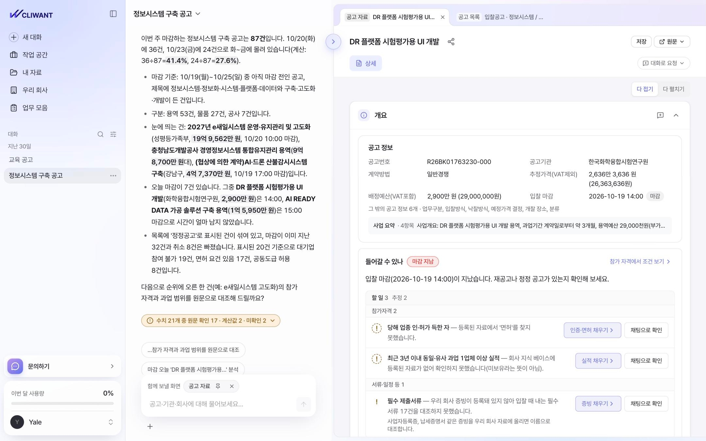
Overview
숙련자만 알던 암묵지를
누구나 묻고 답을 받는 AI로 바꿨습니다
수십 년째 그대로인 공공 입찰 업무를 먼저 AI 기반 SaaS로 다시 설계해 검증했습니다. 이어서 AI 시대에 맞춰 말로 묻고 답을 받는 입찰 에이전트 Cliwant Agent로 발전시켰습니다. MVP를 만들던 시점에 프로덕트 디자이너로 합류해 리서치부터 UI 설계, 프론트엔드, QA까지 맡았습니다.
STEP 01문제 정의
Background
일하는 방식은 수십 년째 그대로,
모든 단계가 사람 손에 달려 있었습니다
공공 조달은 정부와 공공기관이 물건과 서비스를 사는 일로, 기업은 정부 조달 사이트인 나라장터에서 공고를 찾습니다. 제안요청서(RFP)로 참여 자격과 할 일을 확인하고 경쟁사의 과거 계약을 보며 전략을 세워 입찰합니다. 결과를 공개하는 개찰을 거쳐 선정된 기업이 낙찰받습니다.
나라장터 검색, PDF 공고문, 개찰 결과가 따로 흩어져 있어
어디를 먼저 보고 무엇을 대조할지는 담당자가 알아서 판단해야 했습니다.
정보 탐색
나라장터에서 공고 직접 검색
매일 약 3,000건씩 올라오는 공고를 제목으로만 검색할 수 있어 첨부파일을 하나하나 열어 봐야 하고 그 사이 맞는 입찰 기회를 자주 놓칩니다.
공고 해석
수백 페이지 PDF 수동 정독
공고 하나에 딸린 수백 페이지 제안요청서에서 자격 요건과 규격을 찾는 데 한나절이 걸리고 파일 안을 검색할 수 없어 제안서 준비까지 늦어집니다.
전략 수립
경쟁사 분석은 결국 생략
경쟁사와 파트너사 정보도, 잠재 고객을 찾을 데이터도 흩어져 있어 꼭 필요한 분석이 실무에서 빠집니다.
동일한 결과를 내는 데 걸린 시간
그렇다면 왜 신규 담당자는
세 배 넘게 오래 걸릴까요?
In-depth Interview
세 배의 차이는
정보 비대칭에서 나왔습니다
입찰 실무자 인터뷰에서 같은 공고를 보고도 판단 시간이 크게 다른 이유를 찾았습니다. 경험자만 아는 정보가 많아 신규 담당자는 그 정보를 찾고 읽는 데 대부분의 시간을 썼습니다.
숙련자가 이미 아는 것30분
정보 탐색
자주 쓰는 업종과 금액 조건
공고 해석
공고문에서 먼저 확인할 자격 요건
전략 수립
기관과 경쟁사의 과거 계약, 담당자 연락처
신규 담당자가 대신 하는 일100분+
정보 탐색
조건을 매번 다시 맞추다 중간에 멈춥니다
공고 해석
100페이지 넘는 문서를 처음부터 읽습니다
전략 수립
기준 데이터가 없어 분석을 건너뜁니다
근본 원인
정보 비대칭
Painpoint
인터뷰에서 들은 세 가지 불편
사용자의 말에서 출발해 단계마다 풀어야 할 문제를 한 문장으로 정의했습니다.
검색 조건을 매번 다시 입력해야 합니다
업종, 금액 같은 조건을 매번 다시 넣다 보면 하나씩 빠뜨려요. 저희가 잘하는 7.6mm 전선은 공고 제목에 안 나와서 첨부파일을 다 열어 봐야 해요.
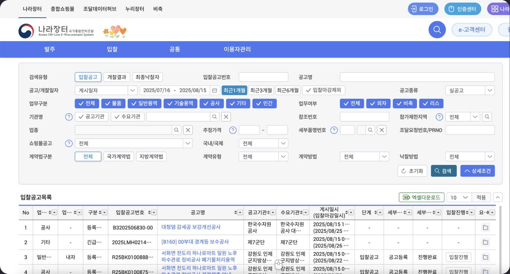
조건은 많고 제목만 검색돼 공고를 찾는 시간이 늘어납니다.
공고문 한 건을 읽는 데 한나절이 걸립니다
100페이지가 넘는 공고문을 처음부터 끝까지 정독해야 자격 요건을 겨우 파악할 수 있어요. 하나라도 놓치면 참여 자격을 잃을 수도 있어서 확인하는 데만 한나절이 걸려요.
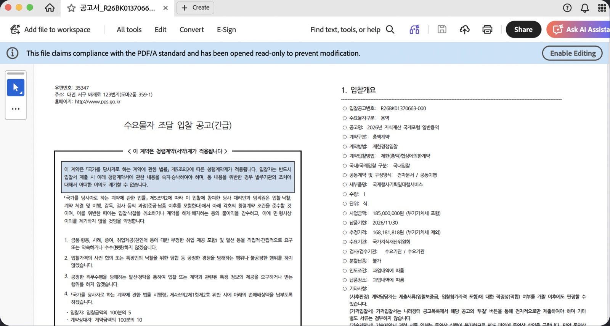
참여할 수 있는지 알려면 문서 전체를 읽어야 합니다.
판단할 기준 데이터와 네트워크가 없습니다
경쟁사는 어떤 사업을 수주했는지, 기관은 어떤 업체와 계약하는지 같은 기준 데이터를 볼 수 없어서 답답해요. 과거 유사 공고나 담당자 연락처 같은 건 아는 사람만 알아요.
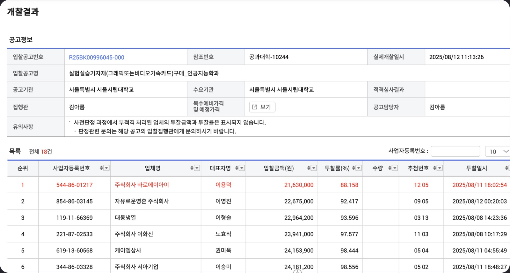
판단에 필요한 정보가 숙련자의 암묵지로만 남아 있습니다.
STEP 02가설 설정
Hypothesis & Solution
숙련자의 정보를 화면이 먼저 건네면
격차가 줄어든다고 보았습니다
정보 탐색, 공고 해석, 전략 수립 세 단계마다 숙련자가 챙기던 정보를 화면이 먼저 보여 주는 가설을 세웠습니다.
가설마다 맞았는지 확인할 지표를 함께 정했습니다.
탐색 효율화
검색 조건을 화면이 대신 기억하고 제목에 없는 조건까지 본문에서 찾으면 탐색 시간과 스트레스가 함께 줄어든다
지표 검색 업무 시간, 스트레스
Solution 1
- 본문 및 조건 검색으로
찾는 출발점을 하나로 - 자주 쓰는 조건 저장과
맞춤 필터
인지 부하 최소화
핵심 조건을 카드로 먼저 보면 공고문을 정독하지 않고도 참여 여부를 판단할 수 있다
지표 RFP 검토 시간, 전체 업무 효율
Solution 2
- AI 요약으로
공고 개요와 요구사항 정리 - 키워드 매칭과 조건 카드로
적격 여부 즉시 판별
데이터 재구성
숙련자만 알던 발주 흐름과 수주 이력을 기관과 기업 단위로 묶어 보여 주면 건너뛰던 경쟁 분석을 데이터로 하게 된다
지표 경쟁 분석 시간, 전체 업무 효율
Solution 3
- 수요기관과 공급기업 단위로
시장 데이터 재구성 - 발주 패턴을 바탕으로 한
단계별 영업 코칭
STEP 03검증
First Release
먼저 SaaS로
세 가설을 검증했습니다
세 가설을 Cliwant SaaS의 화면으로 만들어 실제 고객에게 내보내고 가설마다 정한 지표를 쟀습니다.
H1FIND입찰 기회 매칭
흩어진 탐색을
한 곳에서 시작합니다
회사의 조건을 미리 저장하고 비슷한 뜻의 키워드를 OR로 묶어 매번 다시 넣지 않아도 됩니다. 제목에는 드러나지 않는 규격, 자재, 기술 같은 회사만의 특기 조건도 첨부파일 본문에서 찾아 관련 문장을 모아 보여 줍니다.
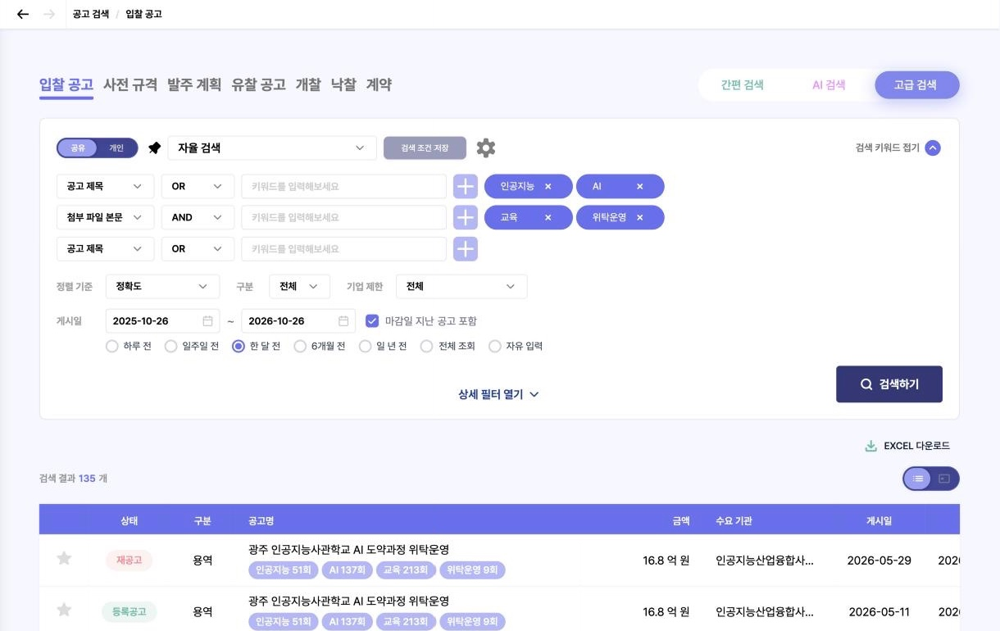
우리 회사의 업종, 지역, 금액 조건을 검색 조건으로 저장해 두고 불러오면 관련 있는 공고만 바로 추려 봅니다.
나라장터는 공고 제목에 단어 하나를 넣어 찾는 방식이라 숙련자는 같은 사업을 가리키는 여러 표현을 하나씩 바꿔 검색하고 결과를 머릿속으로 합쳤습니다. 이 과정을 조건으로 옮겨 같은 뜻은 OR로 한 번에 묶고 꼭 필요한 말은 AND로 걸러, 신규 담당자도 한 번의 검색으로 같은 결과에 닿게 했습니다.
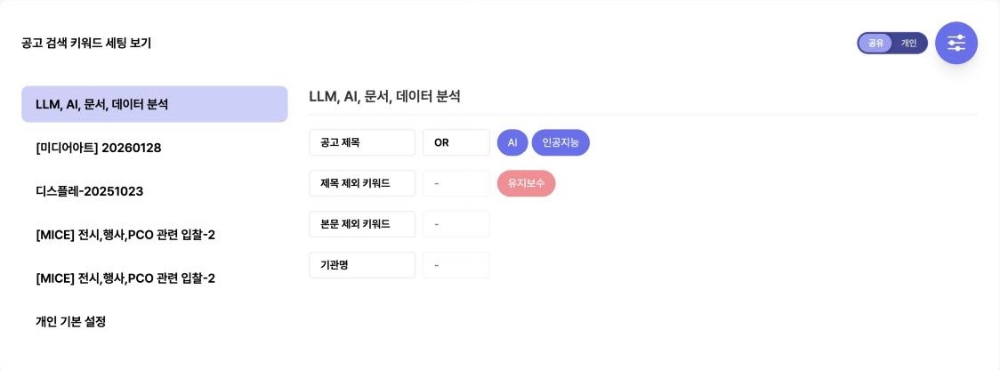
저장한 조건을 공유와 개인으로 나눠 관리하고 제외 키워드로 맞지 않는 공고를 걸러 냅니다. 이 조건으로 매일 아침 추천 공고를 메일로 받습니다.
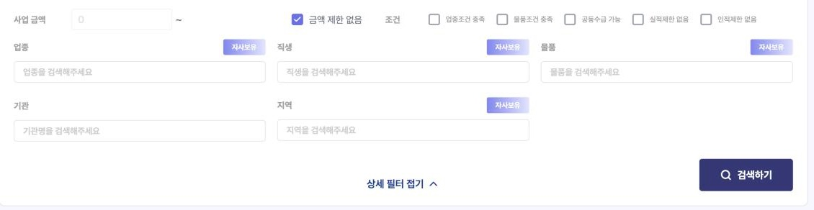
업종, 지역, 금액, 기업 제한처럼 회사에 맞는 조건을 고르는 곳입니다. 고른 조건은 그대로 저장됩니다.
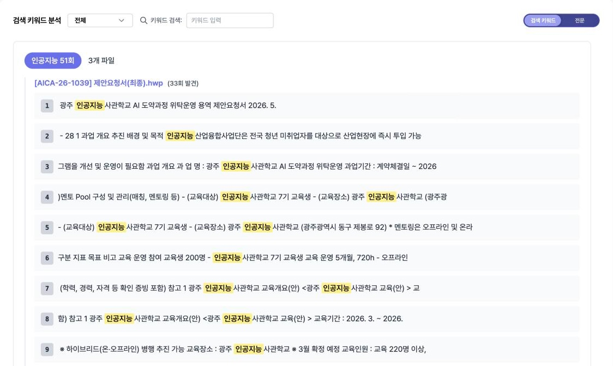
첨부 파일 본문에서 키워드가 나온 문장을 파일별로 모아 강조해 보여 줍니다. 이 공고는 세 파일에서 인공지능이 51번 나왔습니다.
H2SCANAI 기반 RFP 분석
공고문을 다 읽기 전에
참여 조건과 비슷한 입찰부터
100페이지가 넘는 공고문을 처음부터 읽는 대신 AI가 공고를 다섯 줄로 요약하고 우리 회사가 참여 자격이 되는지 바로 표시합니다.
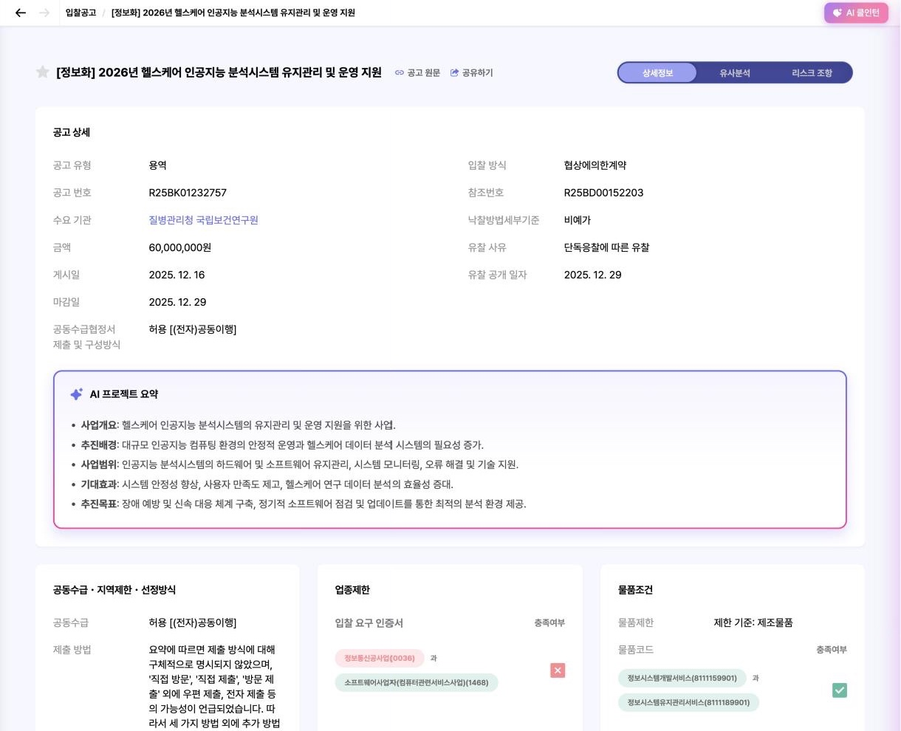
사업 개요, 배경, 범위, 기대효과, 목표를 공고문에서 뽑아 다섯 줄로 정리합니다.
공동수급, 제출 방법, 지역과 기업 제한, 실적과 인적 제한을 항목별 카드로 나눠 보여 줍니다.
공고가 요구하는 업종 인증과 물품 코드를 우리 회사 정보와 대조해 충족 여부를 바로 표시합니다.
예전에는 첨부파일을 모두 내려받아 수백 페이지를 직접 읽었습니다. 지금은 내려받지 않고 위 화면에서 요약과 조건을 바로 봅니다.
같은 사업의 이전 단계와 비슷한 과거 사업을 유사도 순으로 묶고 어느 기업이 가져갔는지까지 보여 줍니다.
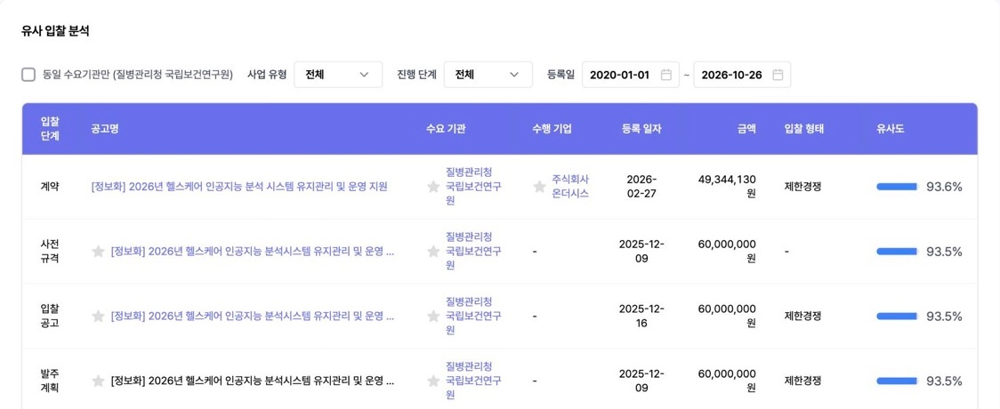
공고 게시부터 개찰까지 단계마다 진행 방식, 일정, 위치를 정리합니다.
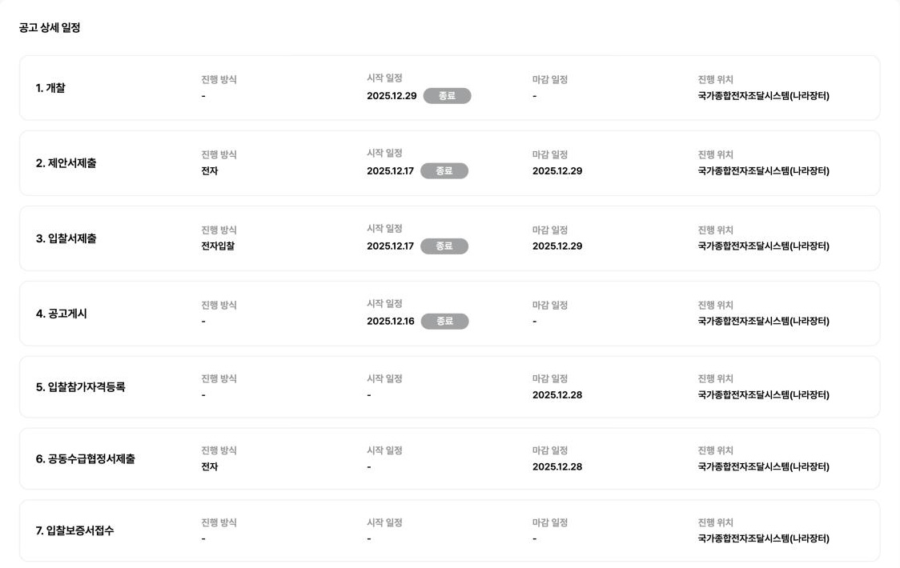
H3ANALYZE잠재 고객사 발굴, 마켓 인텔리전스
흩어진 낙찰 데이터를
기관과 기업 단위로
숙련자에게 묻던 계약 정보를 한곳에 모아 기관별 발주 흐름과 그 사업을 가져간 기업까지 한 화면에서 보여 줍니다.
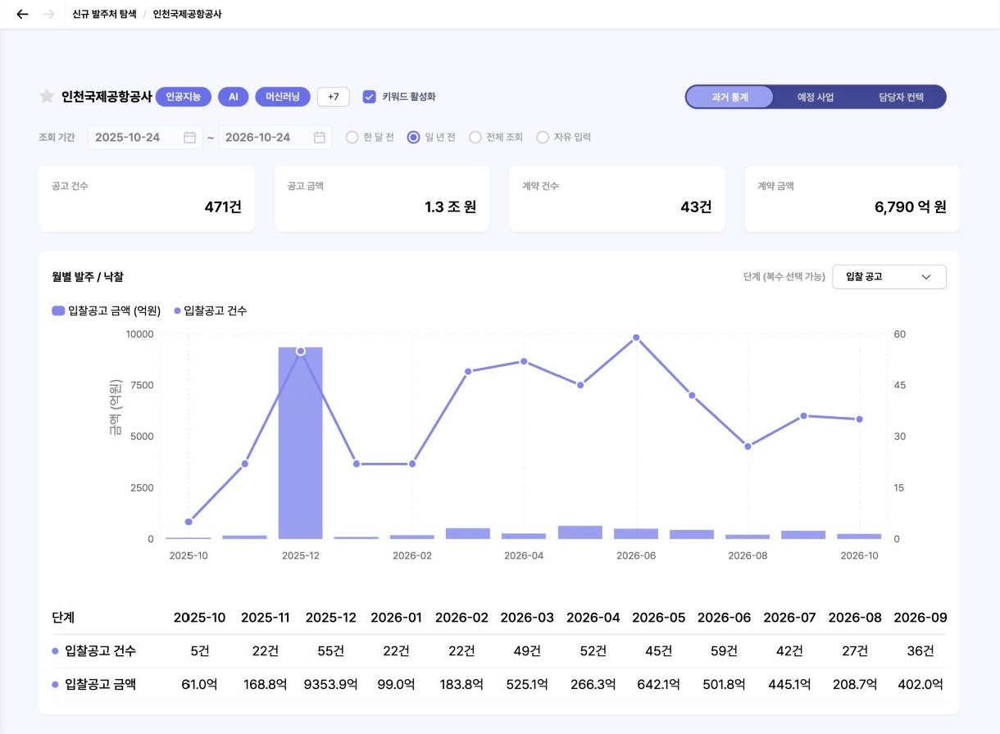
과거 통계에서 예정 사업, 담당자 컨택으로 이어지는 탭 순서대로 영업 단계를 밟습니다.
기관 하나를 고르면 1년 동안의 공고 건수와 금액, 계약 규모가 한 줄에 모이고 아래에 월별 발주 흐름이 이어집니다.
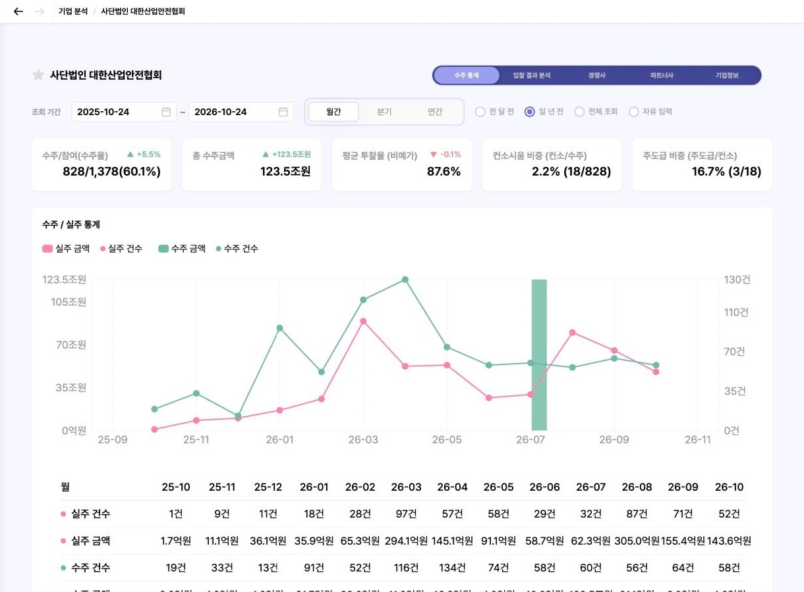
경쟁사 한 곳의 월별 수주와 실주 건수, 금액, 평균 투찰률을 한 화면에서 봅니다.
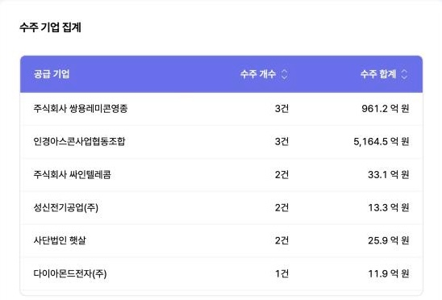
그 기관의 사업을 어느 기업이 몇 건, 얼마에 가져갔는지 공급기업 단위로 묶어 봅니다.
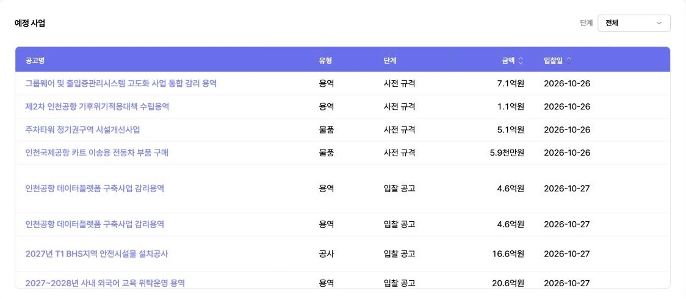
사전 규격과 입찰 공고 단계에 있는 다음 사업을 금액, 입찰일 순으로 미리 봅니다.
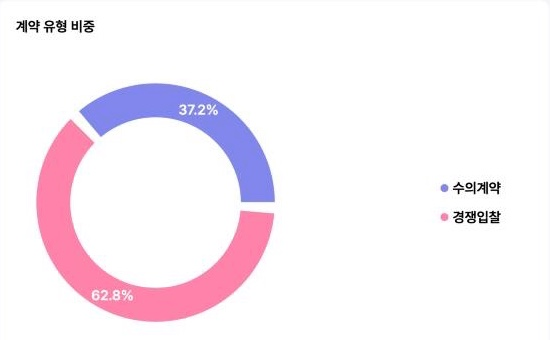
수의계약과 경쟁입찰 비중으로 기관이 사업을 어떻게 맡기는지 봅니다.
Validation
가설마다 맞은 것과 빗나간 것을
나눠 확인했습니다
앞서 세운 세 가설이 맞았는지 확인하려고 노스웨스턴대 켈로그 경영대학원과 함께 고객사 26곳을 설문했습니다.
기능별로 업무 시간이 얼마나 줄었는지 묻고, 입찰 방식이 비슷한 다른 기업과 낙찰 실적을 비교했습니다.
기능별 시간 단축과 전체 업무 연관도
연관도: 이 기능으로 시간이 많이 준 고객일수록 전체 업무 시간도 함께 줄었는지 (0~100점, 클수록 강함)
시간 단축률 (%)전체 업무 연관도 (100점 기준)
H1정보 탐색입찰 검색
H2공고 해석RFP 검토
H3전략 수립경쟁 분석
도입 후 업무 부담은 줄고 낙찰액은 늘었습니다
노스웨스턴대 켈로그 경영대학원과 함께 고객사 26곳을 설문하고, 입찰 방식이 비슷한 다른 기업과 낙찰 실적을 비교했습니다.
업무 시간 단축
62%공고를 찾고 읽고 분석하는 데 들던 시간이 62% 줄었습니다.
스트레스 감소
61%시간이 줄어든 만큼 스트레스도 함께 줄었습니다. 두 값의 연관도는 82점입니다.
도입 첫 달 평균 낙찰액
+2억 원입찰 방식이 비슷한 다른 기업보다 도입 첫 달 평균 2억 원을 더 낙찰받았습니다.
검증 결과
잘된 점
업무 순서대로 세운 가설이
효율 개선으로 이어졌습니다
Find는 업무 스트레스를 줄이고 Scan은 전체 업무 효율을 높였습니다. 업무 흐름에 따라 세운 가설이 실제 효율 개선으로 이어진 것을 확인했습니다.
H1 스트레스 연관도 78점H2 전체 업무 연관도 83점
남은 과제
분석이 전체 업무로
덜 이어졌습니다
Analyze는 업무 시간을 줄였지만 전체 업무로는 덜 이어졌습니다. 서비스를 잘 다루는 고객일수록 업무 시간이 더 크게 줄었습니다. 낙찰액 증가도 첫 달 이후로는 이어지지 않았습니다.
H3 전체 업무 연관도 48점
서비스를 잘 다루지 않아도
효과를 볼 수는 없을까?
STEP 04솔루션
Pivot
도구를 다루는 실력에 기대지 않도록
배워야 할 것을 덜어 냈습니다
업무 시간은 62% 줄었지만 입찰 경험이 적은 소규모 기업은 이용료만큼 효과를 보기까지 5개월이 걸렸습니다.
확인한 한계는 SaaS를 대화형 에이전트로 발전시켜 풀 수 있다고 판단했습니다.
Signal 01Find
키워드 검색을 잘 쓰는 사람만
효과를 봤습니다
Signal 02Decide
분석은 시간을 71% 줄였지만
입찰 판단으로는
잘 이어지지 않았습니다
Signal 03Prepare
신규 담당자가 오면
숙련자의 노하우를
한 번에 전하기 어려웠습니다
Direction
세 단계를 찾고, 판단하고, 준비하는
흐름으로 다시 묶었습니다
BeforeCliwant SaaS
AfterCliwant Agent
질문 하나로 찾기
조건을 잘 조합해야 원하는 공고가 나왔습니다
입력창에 하고 싶은 일을 말로 적습니다
들어갈 수 있는지 판단하기
정보와 분석을 보여 주기만 했습니다
자격과 경쟁을 먼저 판단해 권고합니다
양식을 골라 시작하기
기능을 다 익혀야 일을 시작할 수 있었습니다
역할별 양식을 고르면 바로 시작합니다
Final Product
Cliwant Agent
입찰 담당자의 첫 번째 AI 동료
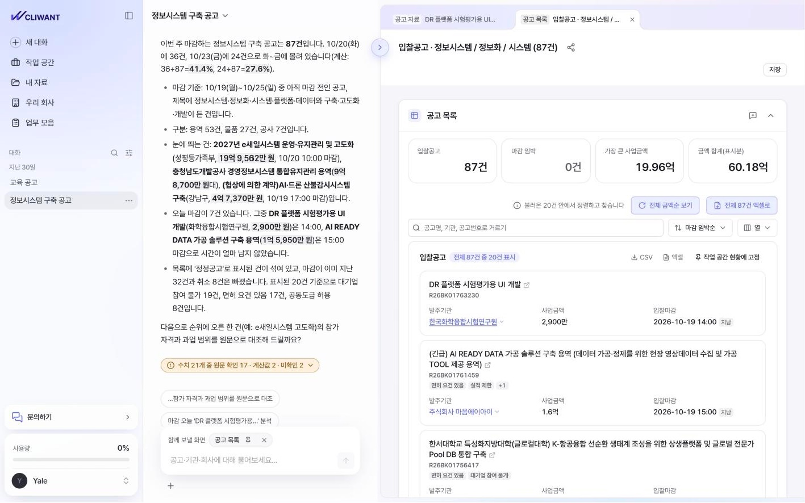
01
검색 방법을 익히는 대신
질문 하나로 찾습니다
입력창 하나에 평소 말투로 묻고 결과는 대화 옆에서 봅니다. 검증한 목록과 상세 화면은 그대로 두고 찾는 방법만 바꿨습니다.
1입력창 하나로 묻기
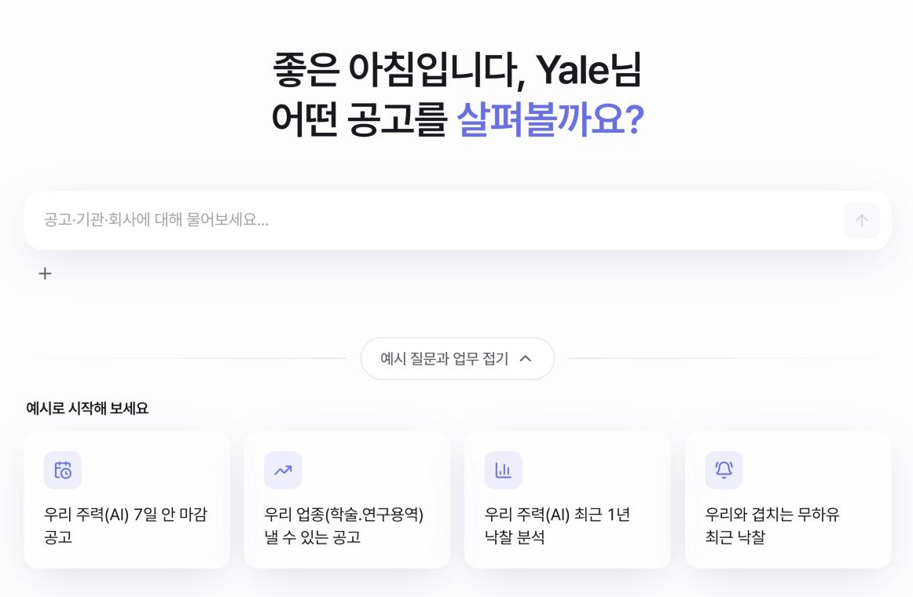
- SaaS
- 검색, 요약, 분석이 화면마다 나뉘어 있어 어디서 시작할지부터 알아야 했습니다.
- Agent
- 첫 화면에는 입력창 하나와 우리 회사 주력과 업종에 맞춘 예시 질문을 두어, 무엇을 물을지 몰라도 바로 시작합니다.
2말하면 조건을 묶어 찾기
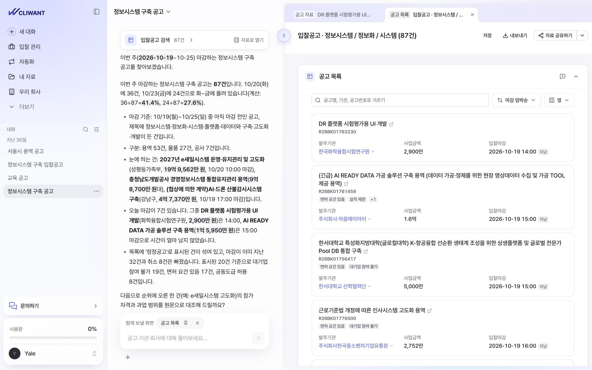
- SaaS
- AND, OR로 키워드를 직접 조합해야 원하는 공고가 나왔습니다.
- Agent
- “정보시스템 구축 공고”라고 말하면 비슷한 주제어와 사업 유형을 각각 묶어 조합하고, 찾은 기준을 답에 먼저 밝힌 뒤 결과를 대화 옆 목록에 엽니다.
02
정보만 보여 주는 대신
들어갈 수 있는지 먼저 판단합니다
기존에는 들어갈 수 있는지를 담당자가 직접 따져야 했습니다. 이제는 회사 기준으로 먼저 판단하고 근거와 함께 보여 줍니다.
1참여 자격부터 확인
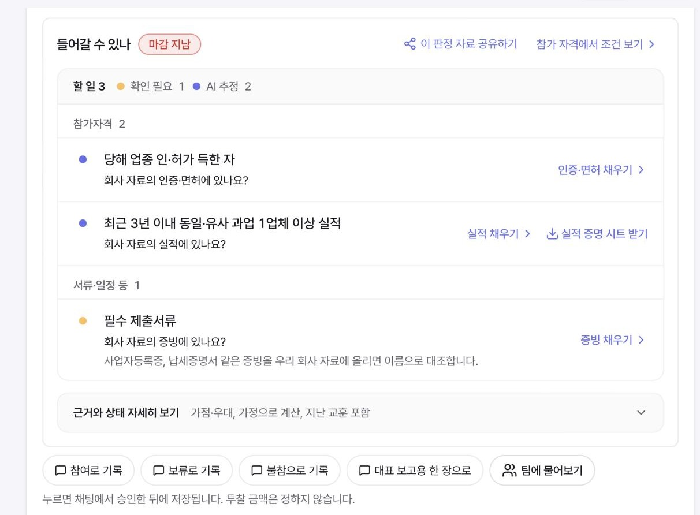
- SaaS
- 참여 자격은 원문과 서류를 직접 대조해야 했습니다.
- Agent
- 미리 등록한 회사의 면허, 실적, 증빙과 대조해 막힌 자격과 확인할 항목을 먼저 보여 주고 빈 서류는 바로 채우게 안내합니다.
2예상 경쟁사 분석
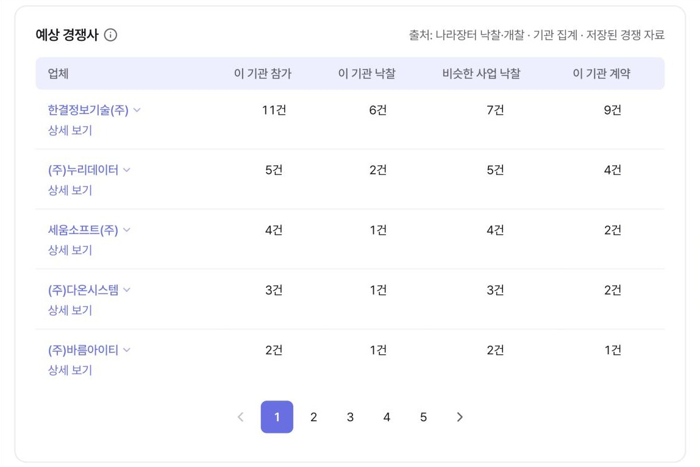
- SaaS
- 경쟁 분석은 시간을 71% 줄였지만 전체 업무와의 연관도는 세 기능 중 가장 낮았습니다.
- Agent
- 비슷한 지난 사업의 낙찰과 개찰 참가, 이 기관 계약 기록으로 경쟁사를 고르고 업체마다 경쟁사로 본 근거를 함께 보여 줍니다.
3근거와 함께 권고
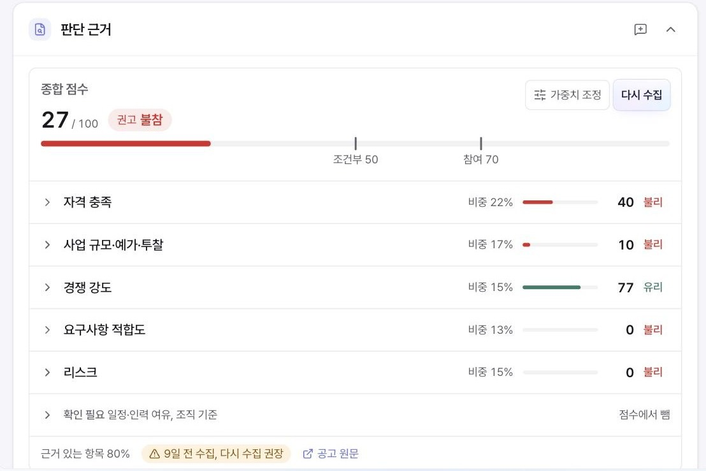
- SaaS
- 항목별 정보는 있었지만 이를 묶어 결론을 내는 일은 담당자 몫이었습니다.
- Agent
- 항목별 점수로 종합 점수와 권고를 보여 주고, 원문으로 확인된 항목이 얼마나 되는지 밝혀 추정과 사실을 나눠 볼 수 있게 합니다.
03
다시 배우는 대신
양식을 골라 시작합니다
기존에는 신규 담당자에게 숙련자의 노하우를 한 번에 전하기 어려웠습니다. 이제는 숙련자의 업무 순서를 담은 역할별 업무 양식을 골라 바로 시작합니다.
1역할별 양식에서 고르기
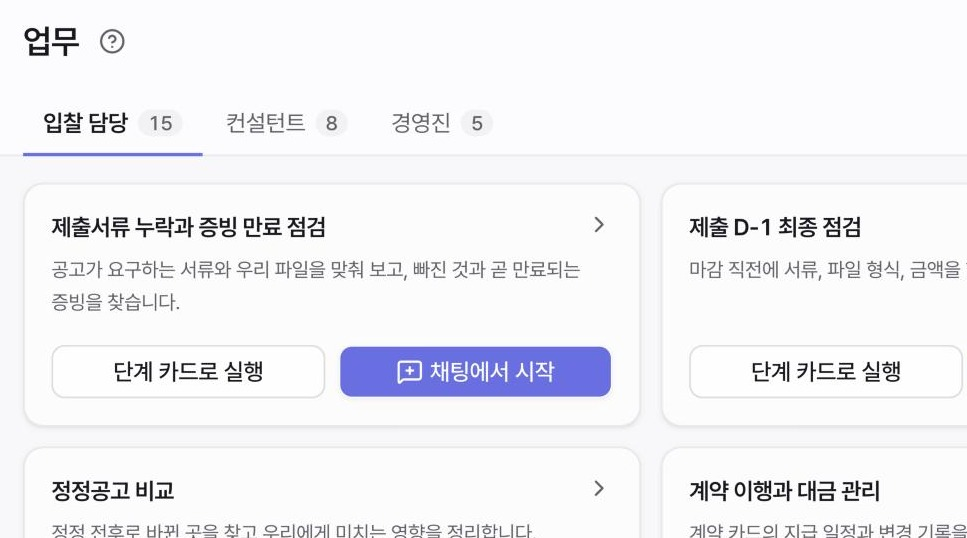
- SaaS
- 새 담당자는 기능을 다 익혀야 일을 시작할 수 있었습니다.
- Agent
- 입찰 담당, 컨설턴트, 경영진마다 숙련자가 하던 순서를 양식으로 골라 시작합니다.
2반복 업무는 자동화로
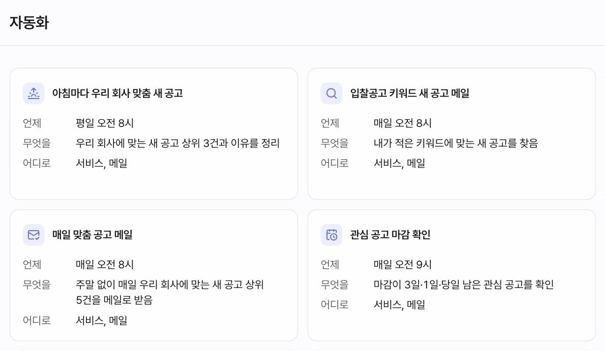
- Agent
- 새 공고, 마감, 공고 변경처럼 매일 챙기던 확인을 언제, 무엇을, 어디로만 정해 두면 에이전트가 정한 시간에 대신 챙깁니다.
3입찰 관리 보드에서 이어 가기
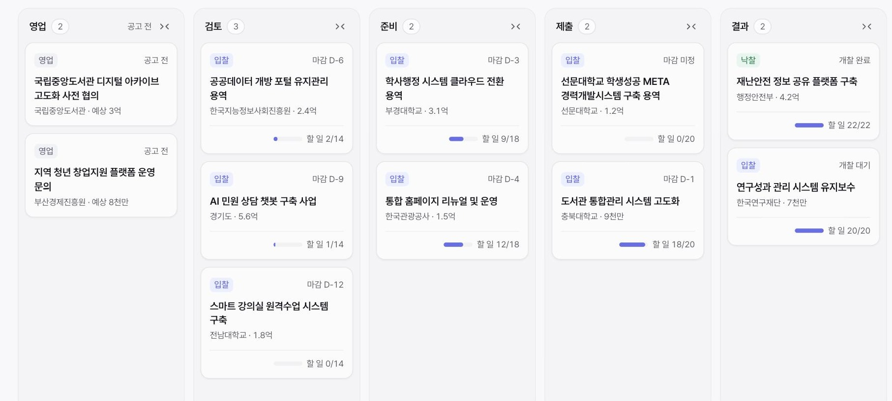
- Agent
- 입찰 관리에 담은 공고는 영업, 검토, 준비, 제출, 결과 단계 보드에 남아 담당자가 바뀌어도 어디까지 왔는지와 남은 할 일을 이어서 봅니다.
Reflection
바꾼 것보다
확인할 것이 더 많이 남았습니다
에이전트는 아직 초기 단계라 SaaS처럼 숫자로 확인하지 못했습니다.
만들면서 내린 판단과 남은 질문을 정리했습니다.
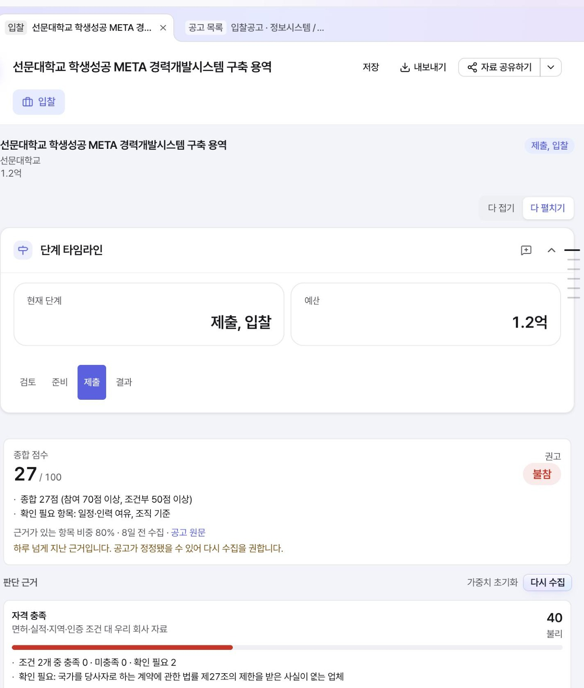
HANDS-ON
전달 단계를 없앴습니다
예전에는 피그마로 디자인을 만들어 프론트엔드 개발자에게 넘겨야 했습니다. Claude Code로 리서치부터 UI 설계, 프론트엔드, QA까지 직접 맡아 설계한 화면이 의도대로 구현됐는지 바로 확인하고 고쳤습니다.
CONVERSION
유료로 잇지 못했습니다
무료 크레딧을 다 쓴 사용자가 유료 가입으로 넘어가지 않고 있습니다. 크레딧이 끝나는 순간만이 아니라 쓰는 동안 왜 가치를 느끼지 못했는지, 사용 로그를 보고 사용자 목소리를 직접 들어 확인하려 합니다.
VALIDATION
전환을 설계합니다
SaaS와 같은 기준으로 찾기와 판단의 효과를 다시 재고, 확인한 이유를 바탕으로 유료로 이어지는 화면을 설계하겠습니다.
Thank you
다음 프로젝트
SnapShorts
주제만 고르면 AI가 숏폼 영상을 만들어 주는 제품을 혼자 만들었습니다.
미국 사용자를 대상으로 배포해 실제 회원가입을 받았습니다.